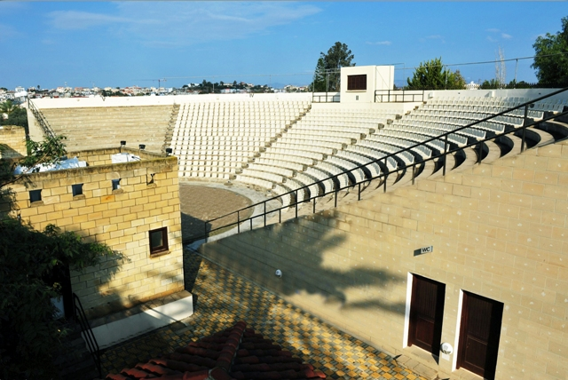

<!--
  Generated template for the EventPage page.

  See http://ionicframework.com/docs/components/#navigation for more info on
  Ionic pages and navigation.
-->

<ion-header>

  <ion-navbar>
    <ion-title>
      Εκδηλώσεις
    </ion-title>
  </ion-navbar>

</ion-header>


<ion-content>
  <ion-refresher (ionRefresh)="doRefresh($event)">
    <ion-refresher-content>pullingIcon="arrow-dropdown"</ion-refresher-content>
  </ion-refresher>
  <div *ngIf="isDataAvailable">
    <div>
      
    </div>
    <div padding>
      <h1 [innerHTML]="dataset[0].F426TITLE | safe: 'html'"></h1>
      <span>{{dataset[0].F426DATEFROM | date: 'dd/MM/yyyy'}}</span>
      <br>
      <span [innerHTML]="dataset[0].F426LDESC | safe: 'html'"></span>
    </div>
  </div>
</ion-content>
<ion-footer no-shadow>
  <ion-toolbar position="bottom" padding>
    <div style="float:left; text-align: left;">
      <ion-icon name="md-share" style="margin:auto;color:#488aff; font-size: 20px;"></ion-icon>
    </div>
    <div style="float:right; text-align: right;">
      <ion-icon name="ios-thumbs-up-outline" style="margin:auto;color:#488aff; font-size: 20px;"></ion-icon>
      0 &nbsp;&nbsp;
      <ion-icon name="ios-thumbs-down-outline" style="margin:auto;color:#488aff; font-size: 20px;"></ion-icon>
      0
    </div>
  </ion-toolbar>
</ion-footer>